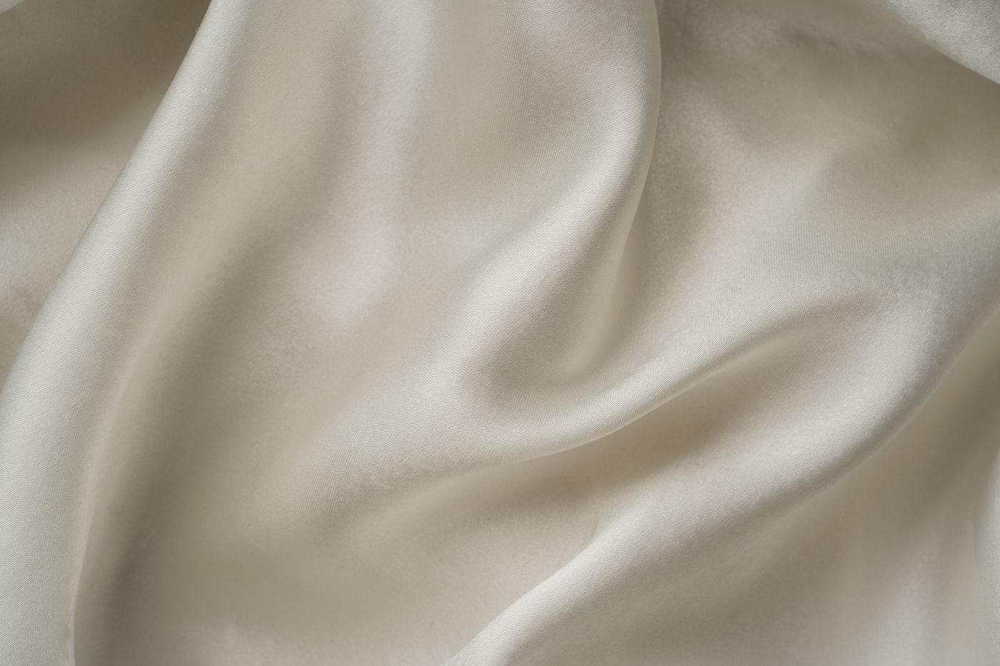

Home / Scent School
The FRAGNIVO Scent School
Everything you need to choose and wear a fragrance, in plain language.
What is a decant?
A decant is a smaller amount of fragrance transferred from the original bottle into a separate spray atomiser. A 10 ml decant lets you wear a scent over several days and see how it suits you.
Same scent. Smaller format.
Why try a decant?
A fragrance can smell different on a testing strip, on your skin and after a few hours. A decant gives you time.
- Test the scent Wear it before choosing a full bottle.
- Explore more Try several fragrances in a smaller size.
- Take it along It fits easily in a bag or on your travels.
EDP vs EDT
Eau de Parfum
Usually a higher concentration of fragrance materials.
Eau de Toilette
Typically a lighter concentration, though formulas vary.
Concentration alone cannot tell you how long a fragrance will last on your skin. Skin, ingredients, weather and how you apply it all play a part.
How a scent unfolds
- Top notes
- The first impression after spraying.
- Heart notes
- The main character as it develops.
- Base notes
- The impression that remains later.
These stages overlap and every perfume develops differently, so give a fragrance time to settle before you decide.
Find your scent family
Families overlap, and you may enjoy more than one.
- FreshClean, airy, citrus
 FloralPetals, delicate, soft
FloralPetals, delicate, soft- WoodyDry, earthy, warm
 AmberWarm, resinous, rich
AmberWarm, resinous, rich
How to test a perfume
- Spray on skin Start with one fragrance on clean skin.
- Let it develop Notice how the scent changes as it settles.
- Check again later Return to it after an hour or two.
Test a few at a time, because too many scents become hard to tell apart.
How to apply perfume
- Start light Use a small amount, then adjust to taste.
- Spray on clean skin Choose comfortable areas such as wrists or neck.
- Let it dry Avoid rubbing the sprayed area.
- Reapply if needed Performance varies from fragrance to fragrance.
If your skin is sensitive, test a small area first.
How to store perfume
Heat, strong light and repeated temperature changes can affect a fragrance over time. Keep bottles in a cool, dry place away from direct sunlight, and close them properly after use. A bedroom drawer or cupboard is often better than a steamy bathroom or sunny windowsill.
Find your signature scent
Start with the styles you already like, try them on your skin, and notice how they feel during an ordinary day. A scent that suits your routine is often a better choice than one you buy only because it is popular.